Installation of development environment for service development
This page contains the installation instruction necessary to install a complete development environment to be able to develop custom service for the Qualispo Factory. There is NO prerequisite of installed software, the instruction start from a bare computer with only its operating system installed. All the instructions are given for a Linux Ubuntu 9.04 ("jaunty") operating system, you may need to transpose them if you're on another Linux flavor or another operating system.
Here is the checklist of everything that you will need to install:
- Java JDK 1.6
- Svn 1.6
- Git 1.6
- maven 2
- JBoss AS 5.0.1.GA
- Eclipse "Galileo"3.5 JEE - with the following plugins
- svn plugin
- git plugin
- maven plugin
- jboss tools plugin
Step 1: installing Java
Version needed: JDK 1.6
Everything in the qualiso factory is done in Java. So the very first step is to ensure that Java is running on the system. However, there are two things that need to be taken care of: the version of Java and the kind of Java environment. There are at least 3 versions of Java currently available (1.5, 1.6, and 1.7), and there are 2 kinds of java environment: the JRE (Java Runtime Environment) and the JDK (Java Developer Kit). You need Java 1.6, as Java 1.5 is too old and is missing some advanced functionnalities of Java 1.6 that are used in the Qualipso Factory. Also, you need to be able to develop Java program, and especially to compile Java source code into Java bytecode. The JRE environment contains only the necessary things to RUN Java program, but nothing to develop (no compiler), so you need the JDK, not the JRE. In summary, you need to have the Java JDK 1.6 running on the system.
You can test your version of JDK throught the shell: Funkadelic:~$ javac -version javac 1.6.0_16 The only important figures are the two first ones ("1.6" here), the rest denote minor version numbers and generally correspond do bug corrections.
If you have a different version of javac, it doesn't necessary means that you need to install Java, as you may have several version of Java installed, and the system is only using one. You can check that in the shell:
Funkadelic:~$ update-java-alternatives -l
java-1.5.0-sun 53 /usr/lib/jvm/java-1.5.0-sun
java-6-sun 63 /usr/lib/jvm/java-6-sun
Each line in the given answer is a Java version installed on your system. If you have a "java-6-sun" line, then it means that the correct version of java is installed, but that the system is not using it. You can correct that using the following shell command:
Funkadelic:~$ sudo update-java-alternatives -s java-6-sun
If you don't have a "java-6-sun" line in the answer of update-java-alternatives -l, or if you get an "unknown command" error message (or something similar) as the anwser of javac -version, then it means you need to install the Java JDK. To install Java JDK 1.6 with Synaptic (on Ubuntu):
JAVA_HOME environment variable by adding the following line to your .bashrc file:
export JAVA_HOME=/usr/lib/jvm/java-6-sun
Step 2: installing Subversion
Version needed: 1.6
Subversion is the main version control system (VCS) used for the sources of the factory, on the INRIA GForge forge. You need to install a client of the same version than used on the GForge server, that is version 1.6. If you don't, you will get error message and won't be able to commit.
You can test your version of svn throught the shell: Funkadelic:~$ svn --version svn, version 1.6.1 (r37116) As always, the only important figure is the second figure ("6" here). With a "6", you already got the necessary version of svn running. You can skip this step and go directly to the Git installation step. With a "5" or a "unknown command" error message (or something similar), you need to install SVN 1.6.
To install the 1.6 version, you need to install a specific source repository, as by default ubuntu 9.04 only allows svn 1.5: https://launchpad.net/~anders-kaseorg/%2Barchive/subversion-1.6
- In a shell, type the following command: sudo apt-key adv --keyserver keyserver.ubuntu.com --recv-keys 413576CB This will add the key to authenticate the new repository that you will add just after.
- Launch "Software Sources" (in "System" -> "Administration")
- In the "Third-Party Software" tab, click on the "Add..." button (bottom left) 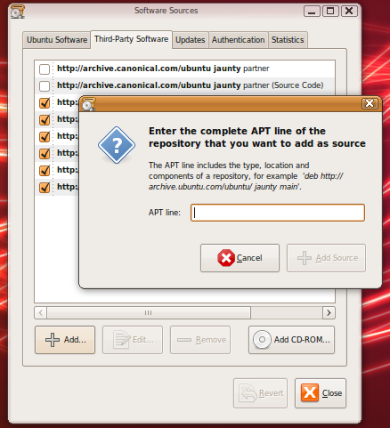
- Fill the "APT line:" field with the following line: deb http://ppa.launchpad.net/anders-kaseorg/subversion-1.6/ubuntu jaunty main and close the windows. Accept to refresh the packages list if the system ask you for.
- Launch "Synaptic Package Manager" (in "System" -> "Administration")
- Search for the "subversion" package and install it. 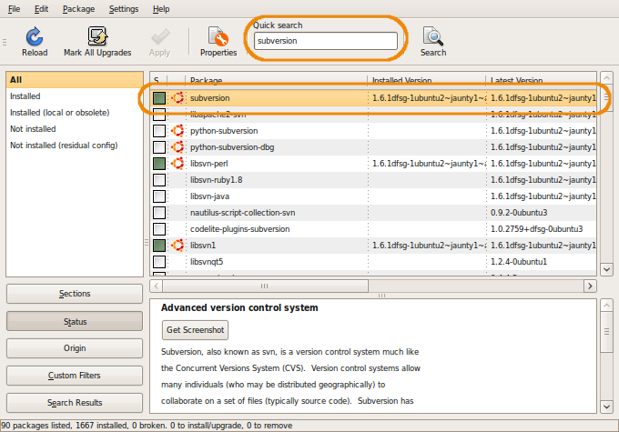
- Test that your svn version is correctly installed, by typing the following command in the shell: Funkadelic:~$ svn --version svn, version 1.6.1 (r37116)
Of course, you can use svn directly from the shell, but you will also install later a plugin for eclipse that will allow you to use svn directly from Eclipse.
Step 3: installing Git
Version needed: 1.6
Git is another source control system, but a distributed one (DVCS). As some qualipso developers use it, it's a good idea to install it.
You can test your version of git throught the shell: Funkadelic:~$ git --version git version 1.6.0.4 If you got an "unknown command" error message (or something similar), you need to install Git.
- Launch "Synaptic Package Manager" (in "System" -> "Administration")
- Search for the "git-core" package and install it. 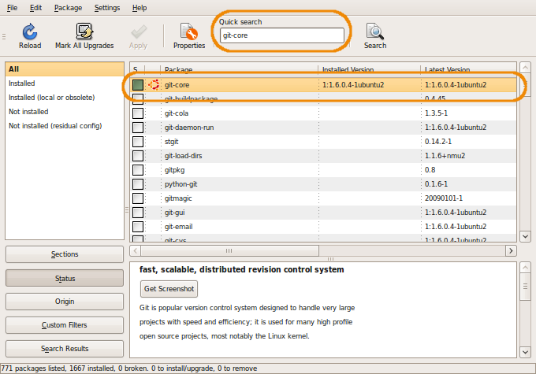
- Test that your git version is correctly installed, by typing the following command in the shell: Funkadelic:~$ git --version git version 1.6.0.4
Of course, you can use git directly from the shell, but you will also install later a plugin for eclipse that will allow you to use git directly from Eclipse.
Step 4: installing Maven
Version needed: 2
Maven is the software project management used in the Qualipso Factory. You can think of it as a "make" or "ant" on steroid. Maven manage building phases and dependencies, using a "pom.xml" file, that contains all necessary informations. Maven manage dependencies to other jar by downloading them from well-known repositories and keeping them in a local repository, the ".m2" folder at the root of your home directory. A specific maven repository has been set up at http://radis.loria.fr/maven2/. This repository contains a cache of all jars needed by the Qualipso Factory, and also of the Qualipso Factory jars themselfs. With this repository, it is possible to create a factory service without even directly downloading the forge jars, as they will be donwloaded and added as necessary directly by Maven
The main useful phases for the Qualispo factory are:
- mvn test
- Compile all necessary classes and run the tests.
- mvn package
- Same as test, but then package everything in the format specified in the pom.xml file (jar, war, ear, ...)
- mvn install
- Same as package, but then publish everything in the local repository (".m2" folder at the root of the home folder), so that it's accessible to other local maven projects.
You can test your version of maven throught the shell: Funkadelic:~$ mvn --version Maven version: 2.0.9 If you got an "unknown command" error message (or something similar), you need to install Maven.
- Launch "Synaptic Package Manager" (in "System" -> "Administration")
- Search for the "maven2" package and install it. 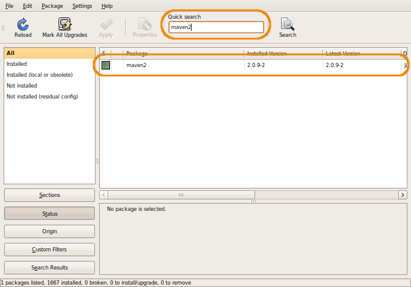
- Test that your maven version is correctly installed, by typing the following command in the shell: Funkadelic:~$ mvn --version Maven version: 2.0.9
Of course, you can use maven directly from the shell, but you will also install later a plugin for eclipse that will allow you to use maven directly from Eclipse.
Step 5: installing JBoss
Version needed: 5.0.1.GA
JBoss AS (Application Server) is the EJB3 application server used for Qualipso Factory. Be careful about the version number here. At the time of this writing, the last version of JBoss AS is 5.1.0. We don't use this version, but the just previous one, JBoss AS 5.0.1.
The installation is simple, just download the correct archive and unzip it where you want the server to be (generally, "/opt/jboss" is a reasonable choice):
- Download the JBoss AS 5.0.1.GA archive from the JBoss site: http://www.jboss.org/jbossas/downloads/ (You can also download it directly from SourceForge)
- Choose a directory on your hard drive (for example, "/opt") and unzip the JBoss archive "jboss-5.0.1.GA-jdk6.zip" there. You can remove the zip file after that. 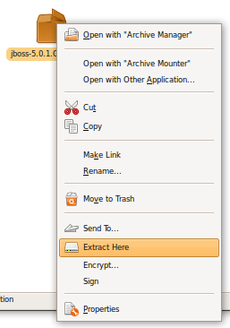
-
Set up the
JBOSS_HOMEenvironment variable by adding the following line to your .bashrc file:export JBOSS_HOME=/<path_to_the_chosen_folder >/jboss-5.0.1.GA
Some important facts about JBoss :
- To run JBoss: $JBOSS_HOME/bin/run.sh
- To deploy something in JBoss, be it a jar, a war, or an ear, you just need to copy it in the following folder: $JBOSS_HOME/server/default/deploy. If the server is already running, it will pick it up automatically after a few seconds. You then have to look at the log to check if it was correctly deployed or if there was errors.
- Configuration files for the server are in $JBOSS_HOME/server/default/conf. In particular, "login-config.xml" contains the JAAS configuration (for user authentication), and the "props" folder contains users, passwords and roles definitions. And "jboss-log4j" contains the configuration for the server logger, if you need more details in the log.
Of course, you can launch jboss directly from the shell, but you will also install later a plugin for eclipse that will allow you to launch JBoss, access to its logs, and deploy/undeploy things in it directly from Eclipse.
Step 6: installing Eclipse
Version needed: 3.5 (Galileo) JEE
Eclipse is the Java IDE used to develop the Qualipso Factory and its services. Thanks to its plugins architecture, it is easily extendable to to a rich diversity of tasks. Comparable to linux distribs, there are several "Eclipse distrib", all containing the same base Eclipse IDE, differing only by the plugins already installed in the distrib. In order to develop for the Qualipso Factory, you logically need the JEE Eclipse distribution.
As for JBoss, the installation is simple, just download the correct archive and unzip it where you want:
- Download the version 3.5 of "Eclipse IDE for Java EE Developers" from the Eclipse site: http://www.eclipse.org/downloads/
- Choose a directory on your hard drive and unzip the Eclipse archive "eclipse-jee-galileo-linux-gtk.tar.gz" there. You can remove the zip file after that. 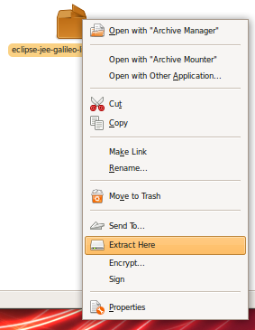
- To launch the Eclipse program, go inside the eclipse folder just created, and double-click on the "eclipse" executable. 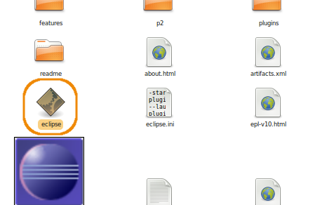 As you will undoubtfully launch Eclipse often, it is a good idea to put a shortcup for the "eclispe" executable easily accessible (like on the desktop, or as a launcher on the tasktray).
Thanks to its plugins, it is easily to link eclipse to other tools, like svn, git, maven, and jboss. The rest of the installation consist of installing the necessary plugins. But before that, if you want to collaborate in the Qualipso Factory you need to configure your code style formatter in Eclipse to use the same convention than in the Qualipso Factory. If you don't do that, then the version control system will detect a lot of unnecessary conflicts, dues to line feed and spaces put by Eclipse. To configure your custom code style formatter:
- Go to "Windows" -> "Preferences": 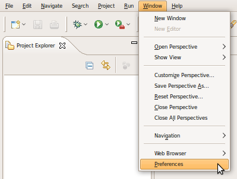
- In the left tree, choose "Java" -> "Code Style" -> "Formatter", and in the corresponding right panel, click on the "New..." button: 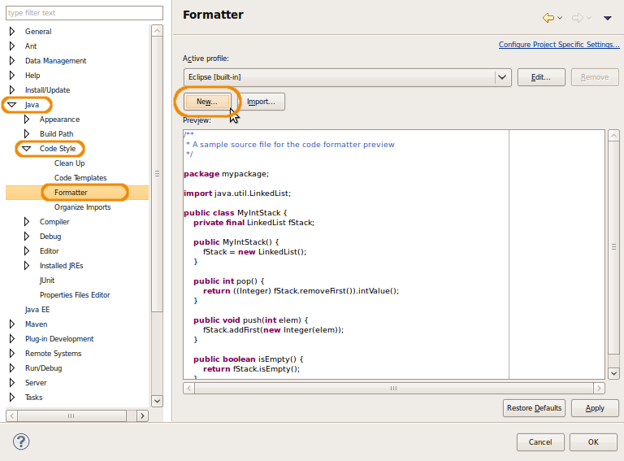
- Fill the "Profile name" with the name of your profile, for example "Qualipso Factory", and then click on the "OK" button: 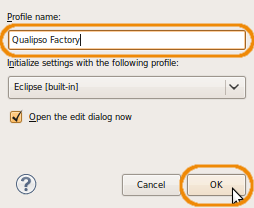
- In the "Indentation" tab, select "Spaces only" for the tab policy, and set "4" for intendation and tab sizes: 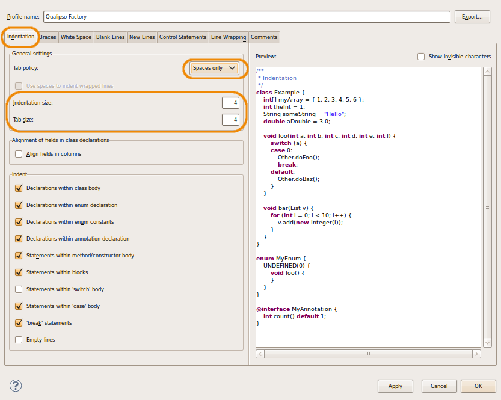
- In the "Line Wrapping" tab, set "160" for the maximum line width, and click on the "OK" buttons: 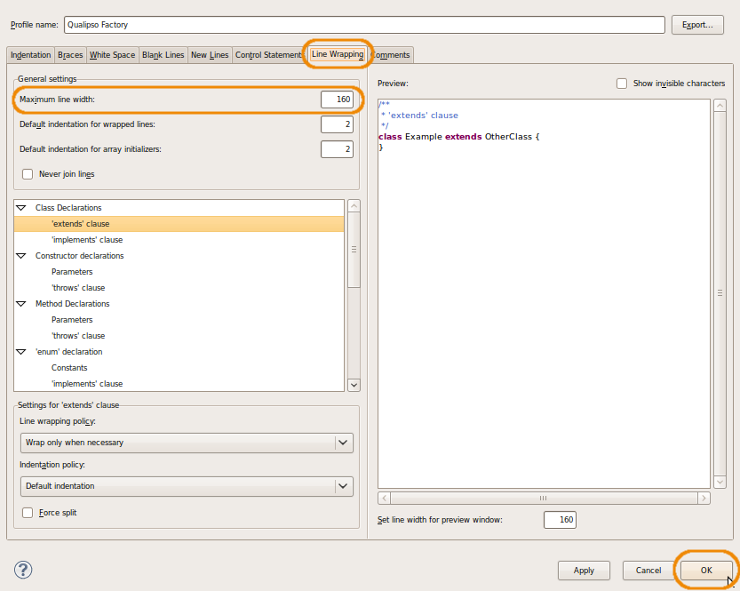
Step 7: installing SVN Eclipse plugin
Subclipse plugin allow you to use svn commands like commit and update directly from Eclipse projects.
Installation of an Eclipse plugin is done directly within Eclipse:
-
Go to "Help" -> "Install New Software...":

- Fill the "Work with:" field with the following site URL, and then click the "Add..." button: http://subclipse.tigris.org/update_1.6.x 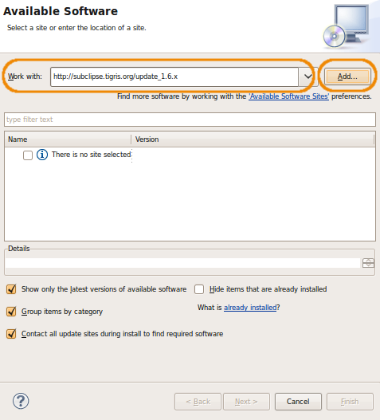
- Fill the "Name:" field with the SVN name and click the "OK" button: 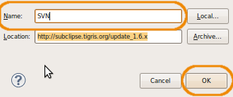
- Check all packages to install, and click the "Next >" button: 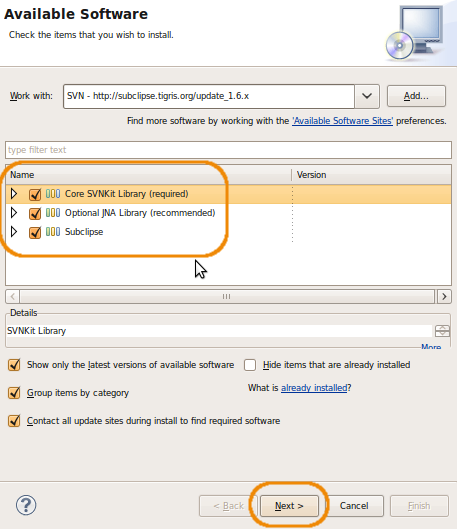
- In the install summary, click again the "Next >" button, and in the license panel, accept the license and click on the "Finish button": 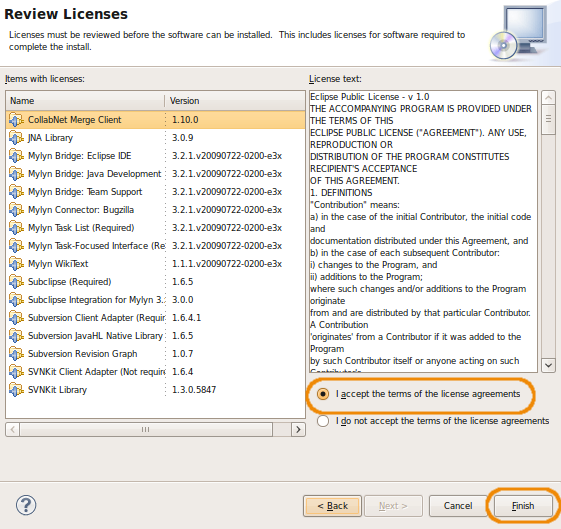
Step 8: installing Git Eclipse plugin
Git plugin allow you to use git commands like commit and pull directly from Eclipse projects.
Installation of an Eclipse plugin is done directly within Eclipse:
-
Go to "Help" -> "Install New Software...":
- Fill the "Work with:" field with the following site URL, and then click the "Add..." button: http://www.jgit.org/updates 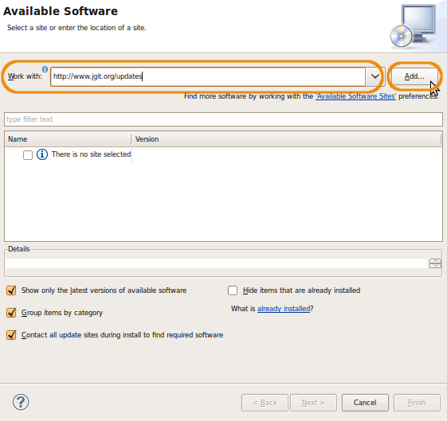
- Fill the "Name:" field with the GIT name and click the "OK" button: 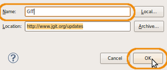
- Check the package to install, and click the "Next >" button: 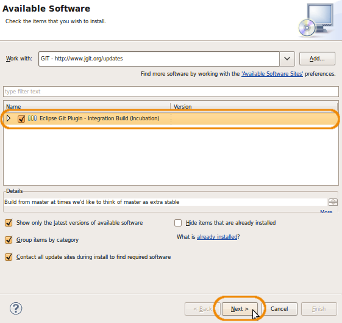
- In the install summary, click again the "Next >" button, and in the license panel, accept the license and click on the "Finish button": 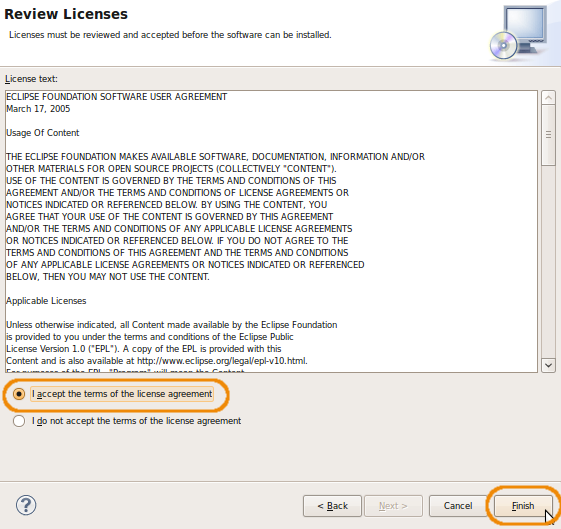
Step 9: installing maven Eclipse plugin
Maven plugin allow you to use maven commands like test, package and install directly from Eclipse projects. Projects should be created or imported as maven projects, instead of classic Eclipse project. Then, maven is used instead of the internal build system of eclipse, especially during continuous building.
Installation of an Eclipse plugin is done directly within Eclipse:
-
Go to "Help" -> "Install New Software...":
- Fill the "Work with:" field with the following site URL, and then click the "Add..." button: http://m2eclipse.sonatype.org/update/ 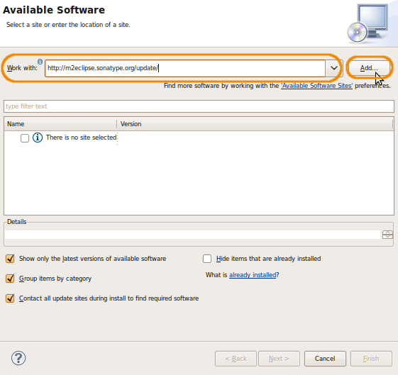
- Fill the "Name:" field with the Maven name and click the "OK" button: 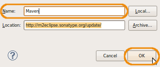
- Check the following packages to install, and click the "Next >" button: 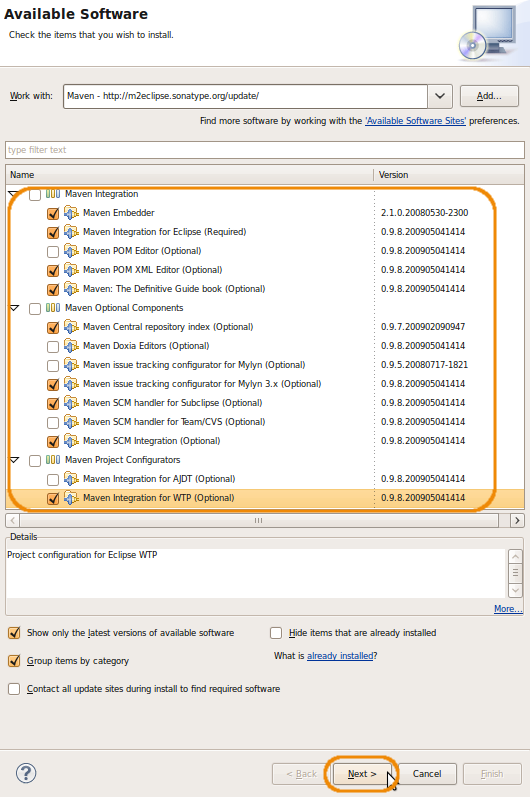
- In the install summary, click again the "Next >" button, and in the license panel, accept the license and click on the "Finish button": 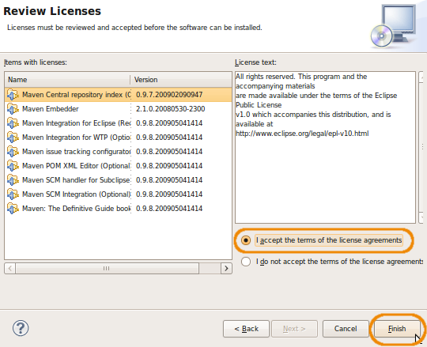
Step 10: installing JBoss Eclipse plugin
JBoss plugin allow you, directly from Eclipse, to launch, stop, and debug JBoss server, to deploy/undeploy your jar/war/ear directly, and to access the server log.
Installation of an Eclipse plugin is done directly within Eclipse:
-
Go to "Help" -> "Install New Software...":
- Fill the "Work with:" field with the following site URL, and then click the "Add..." button: http://download.jboss.org/jbosstools/updates/development/ 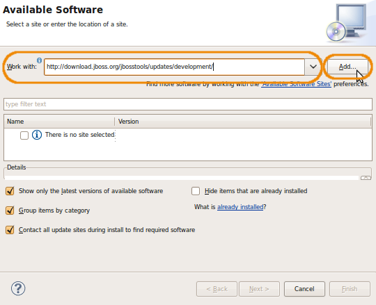
-
Fill the "Name:" field with the JBoss name and click the "OK" button:

- Check the following packages (and not all!) to install, and click the "Next >" button: 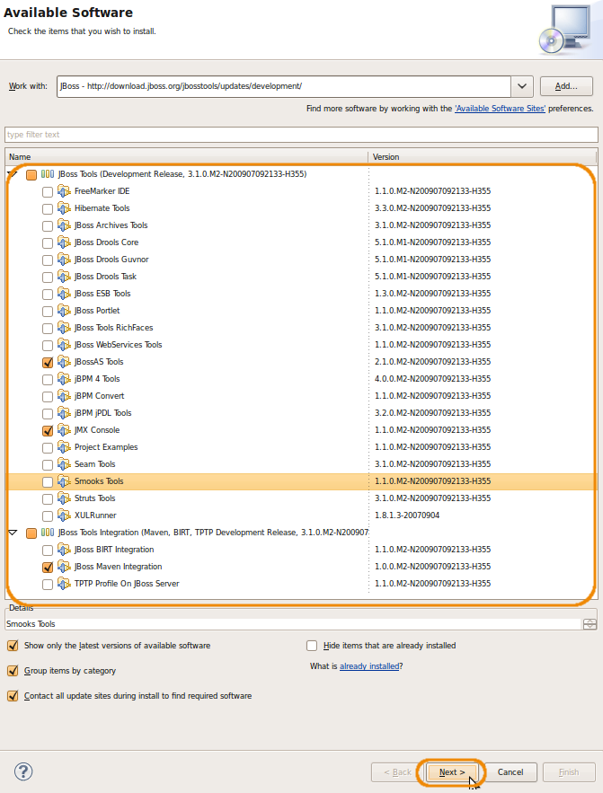
- In the install summary, click again the "Next >" button, and in the license panel, accept the license and click on the "Finish button": 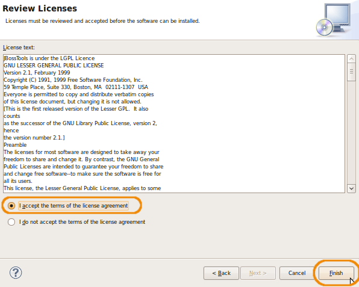
Once the plugin is installed, you can configure it to use the JBoss server you installed previously:
- Click on the "jboss server" icon, and select the "New Server..." menu item: 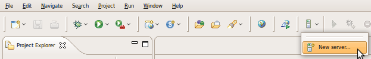
- Check that the server host name is "localhost", and in "JBoss Community", choose "JBoss AS 5.0". Fill the server name with "JBoss 5.01 Local", and click on the "Next >" button: 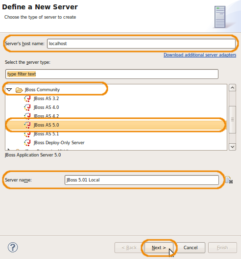
- Fill the runtime name with "JBoss 5.01 Local", and click on the "Browse" button to select the folder where you installed JBoss previously. Once you've provided a correct JBoss installation, Eclipse will fill up the configuration part of the panel, selecting for you the "server" directory and the "default" configuration, which is exactly what you need. You can then click on the "Finish" button: 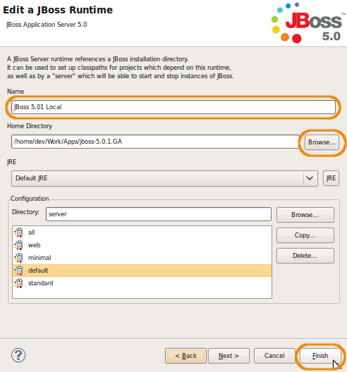 (server configuration can be changed afterwards in "Windows" -> "Preferences" and then "Server" -> "Runtime Environments").
Once you sucessfully finished those 10 steps, you know have a complete and configured development environment (mainly through Eclipse) to develop a Qualispo Factory service.